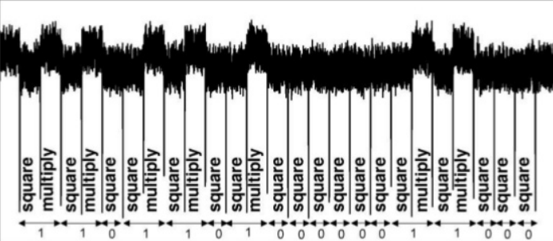

(mpz(85466728970802496052231641309227590688461946610431708918707661868612928527412), True)
8546672897080249605223164130922759068846194661043170891870766186861292852741213 Bad choices of parameters & Side-channel
The bad choice of parameters in RSA can come in many variants: low public, low private, etc. and also in the implementations of the RSA and also the prime generator.
13.1 Common modulus
If lucky enough, we capture two messages with two semiprimes \(n_1\) and \(n_2\) that share a same prime factor, indeed we can find the prime factorization of both, via finding \(GCD(n_1, n_2)\).
Although this attack seems impractical, a research paper has found out that about 3-5% of public key on the Internet (that they can find out), share the prime factorization. With the method of rainbow attack which has been introduced in the previous chapter, many more could be broken.
13.2 Low public exponent
A popular choice of \(e\) is \(3\), as it will reduce the time to encrypt. However, with a big choice of public exponent, this may make the ciphertext in danger, as \(3\) times of exponent may do not change the value under the modulo. The root can be computed quickly, via the library gmpy2 of Python.
from gmpy2 import iroot
from Crypto.Util.number import *
p, q = getPrime(512), getPrime(512)
n = p*q
phiN = (p - 1)*(q - 1)
e = 3
d = inverse(e, n)
m = getRandomNBitInteger(256)
c = pow(m, e, n)
m_break = iroot(int(c), int(e))
print(m_break)
assert m_break[0] == m
print(m)13.3 Low private exponent
In another way, a small choice of private exponent (can be created by a too huge public exponent), also can leak the ciphertext. In here, we will look at the Wiener’s attack.
As we know, the \(ed \equiv 1 \pmod{\phi(n)}\), in another words, \(ed - k\phi(n) = 1\). Divide both side with \(d\phi(n)\):
\[ \bigg | \frac{e}{\phi(n)} - \frac{k}{d} \bigg | = \frac{1}{d\phi(n)} \]
With a huge \(d\phi(n)\), we will have a negligible \(\frac{1}{d\phi(n)}\). Therefore, \(\frac{e}{\phi(n)}\) could be used as an approximation of \(\frac{k}{d}\), or vice versa. Although we know \(e\), we don’t know \(\phi(n)\).
However, there is a theorem, from M. Wiener, that can help us a little bit:
Wiener’s theorem
Let \(n = pq\) \((q \lt p \lt 2q)\), If the private exponent \(d < \frac{1}{3}N^{1/4}\), then an advisery can recover \(d\).
The proof can be found in Wikipedia page of Wiener’s theorem.
The core of the algorithm is that, we can use \(n\) as \(\phi(n)\) in the context of Wiener’s attack. Then, as we has stated \(\frac{e}{\phi(n)}\) could be used as an approximation of \(\frac{k}{d}\), then either \(\frac{e}{n}\) (in the context of this attack). We use a method of Continued Fraction on \(\frac{e}{n}\), then consequently find convergents of its and check if we can find the right \(\frac{k}{d}\). Once we know this, we could find back \(d\) via an quadratic equation. Consequently, we could find back the factorization of \(n\).
def wiener(n, e, c):
'''
Solve for d in c = m^e mod n using the Wiener attack.
'''
# Calculate continued fraction expansion of e/n
frac = continued_fraction(e / n)
convergents = [[x.numerator(), x.denominator()] for x in frac.convergents()]
# Iterate over convergents
for (k, d) in convergents:
# Check if d is actually an integer
if k == 0 or d%2 == 0 or e*d % k != 1:
continue
phi = (e*d - 1)/k
# Create the polynomial
x = PolynomialRing(RationalField(), 'x').gen()
f = x^2 - (n-phi+1)*x + n
roots = f.roots()
# Check if polynomial as two roots
if len(roots) != 2:
continue
# Check if roots of the polynomial are p and q
p,q = int(roots[0][0]), int(roots[1][0])
if p*q == n:
return d, k
# No solution found
return None
n = 6727075990400738687345725133831068548505159909089226909308151105405617384093373931141833301653602476784414065504536979164089581789354173719785815972324079
e = 4805054278857670490961232238450763248932257077920876363791536503861155274352289134505009741863918247921515546177391127175463544741368225721957798416107743
c = 5928120944877154092488159606792758283490469364444892167942345801713373962617628757053412232636219967675256510422984948872954949616521392542703915478027634
d, k = wiener(n, e, c)
phiN = (e*d - 1) // k
print(phiN)
# solve for the prime factorization
x = var('x')
f = n - n/x - x + 1 - phiN
p, q = [x[0] for x in f.roots()]
assert p*q == n
print(f"n = {p}*{q}")6727075990400738687345725133831068548505159909089226909308151105405617384093204788307013638609485547090121764648347578045648962637915516010740917782550840n = 63949859459297920725542167940404754256294386312715512490347273751054137071981*10519297536036512339138752635189610193310673212790363894831043529384405270125913.4 Hastad’s Broadcast Attack
If someone send same message over and over again, without any padding; someone could read the messages, from the Hastad’s Broadcast Attack.
Assume that the adversary collected \(i\) ciphertexts (\(i \gt e\)), then we can have a system of modular equation:
\[ \left\{\begin{matrix} c_1 &\equiv m^e \pmod{n_1} \\ c_2 &\equiv m^e \pmod{n_2} \\ ...\\ c_i &\equiv m^e \pmod{n_i} \end{matrix}\right. \]
From Chinese Remainder Theorem, we could find a number \(C \equiv m^e \pmod{\Pi_{j=1}^i n_j}\). As the multiplication of \(n_i\) is really big, we can sure that taking \(e^{th}\)-root of \(m^e\) could help us get the ciphertext.
# Implementation of Hastad's Broadcast attack, normal version
def Hastad(ciphertext, n):
x = crt(ciphertext, n)
return real_nth_root(x, e)
n1 = 15531155256715702473857617704486808708718149144340218293989572553
n2 = 4665876664449238167503227140673941051177208287344383452644505383
n3 = 21183715744016961916768204882841616031088804561756503460509763179
e = 3
m = 23333333333333333333333333333333333333333333
c1 = 3545246357420027751080801513596354805792507454079198980994208613
c2 = 2707010410568402623621857261477803260225040847370109587024036966
c3 = 9988366267699268191504634643058847989157961583452909799090445547
n = [n1, n2, n3]
c = [c1, c2, c3]
message = Hastad(c, n)
assert pow(message, e, n1) == c1
print(message)23333333333333333333333333333333333333333333With some more sophisticated padding (but fixed), the attack still can be applied via the Coppersmith’s method. The clearer explaination could be found via Wikipedia page of this attack.
13.5 Side-channel attack example
The side-channel attack is a big class of attack, so in here we just have a look at a small mechanism of it: the square-and-multiply algorithm. Most of modular arithmetic implementation for exponentation is something like this:
def exponent(a, b, n):
'''
Computing a^b mod n
'''
res = 1
while (b > 0):
if (b % 2 == 1):
res = ((res % n) * (a % n)) % n
a = ((res % n) * (res % n)) % n
b //= 2
return res As you may notice, if the current bit of \(b\) in the above process is 1, it will execute the multiplication twice, rather than in case the bit is 0. With big number of RSA, this could require a noticeable amount of time.
Therefore, if someone can attach the power clock on the decryption device; and looking for the pattern of ‘decryption’:

Then, this could reveal the bit of \(d\).
13.6 A very quick introduction to Coppersmith’s method
Don Coppersmith, a mathematician, has introduced a method of solving modular polynomials in polynomial time. Basically, his method will convert the modular polynomials under a modulo to a normal polynomial in \(\mathbb{Z}\), then we can apply the numerical analysis method on the new polynomial. This conversion is supported by an algorithm called LLL lattice basis reduction
To provide a quick example, we will examine if a RSA process using a fixed padding scheme.
Assume we have two guys is sharing their AES-256 key. As they know RSA without padding is vulnerable, they used this padding scheme:
\[ m = 2^{1024} - 2^{128} + k \]
For \(k\) is their key. \(m\) is the padded-key.
Therefore, the ciphertext will be sent can be written as:
\[ c \equiv (2^{1024} - 2^{128} + k)^e \pmod n \]
Then, we could have a polynomial \(f(x) = (2^{1024} - 2^{128} + k)^e - c = 0\) under the \(\mathbb{Z}_n\).
With the Coppersmith’s method, we can solve this polynomial for \(k\):
from Crypto.Util.number import *
e = 3
p, q = getPrime(512), getPrime(512)
n = p*q
key = getRandomNBitInteger(128)
# print(key)
m = 2**1024 - 2**128 + key
c = pow(m, e, n)
print(c)
K = Zmod(n)
P.<x> = PolynomialRing(K, implementation = 'NTL')
f = (2^1024 - 2^128 + x)^e - c
keyBroken = f.small_roots()[0]
assert keyBroken == key
print(keyBroken)82633033845796004747549573332791642419336976223134503191365351063499016327870528606411650067623106729110435236002973001108860823873209355855425694267378772683429911986067425672621927056108387620153618400631818657150449693722782685126044287318464943689078280311043761541667438647198552521827816508055402758969286929976551044907179886525566763542034The Coppersmith’s method is applied in a very wide range of attacks if there is a fixed relationship between the components of RSA. A very noticable case is the ROCA attack, that have leaked more than hundred thousands of ID cards in Estonian.
13.7 Conclusion
RSA attacks is in a wide range, and different methods that this document can not cover it all. For a general knowledge of RSA, I recommend you to spend time on this paper of professor Dan Boneh: Twenty years of Attacks on RSA Cryptosystem. Also, there are some compiled version of many RSA attacks on GitHub, like this one: [RsaCtfTool][(https://github.com/RsaCtfTool/RsaCtfTool).